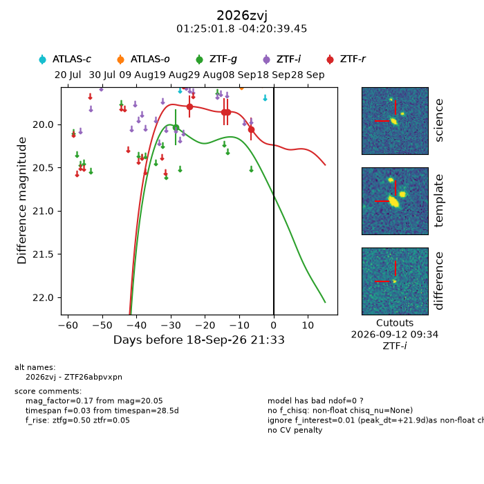
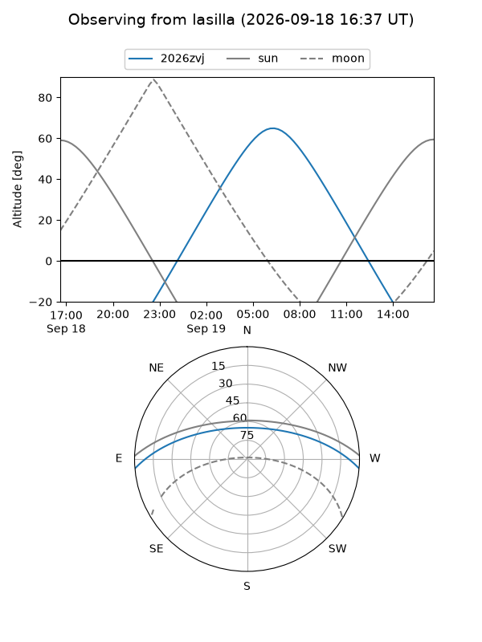
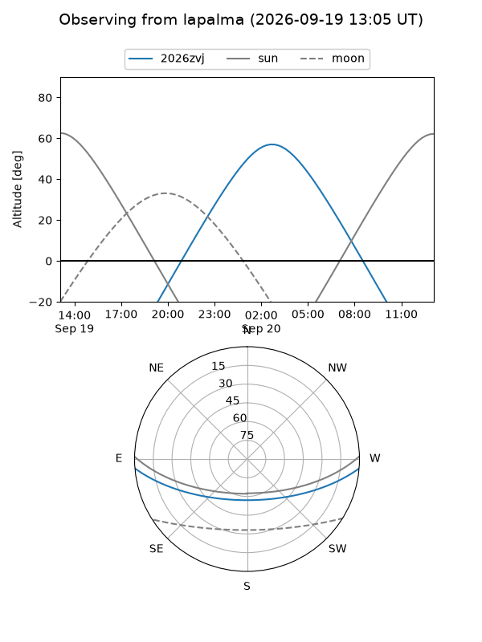
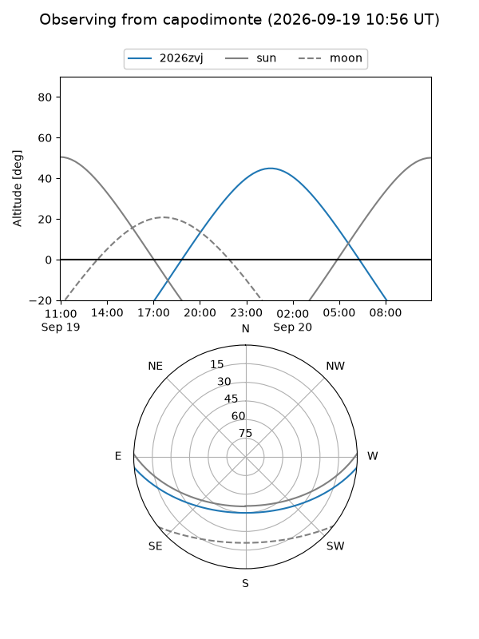
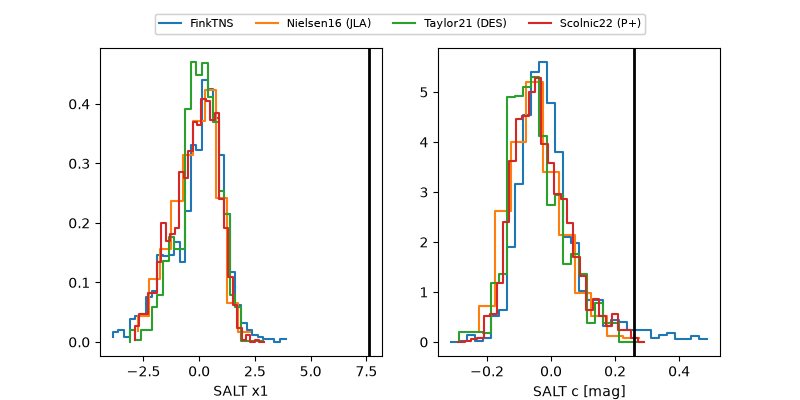

2026zvj
Target 2026zvj at 2026-09-19 09:20
Aliases and brokers:
FINK-ZTF: ztf.fink-portal.org/ZTF26abpvxpn
Lasair-ZTF: lasair-ztf.lsst.ac.uk/objects/ZTF26abpvxpn
ALeRCE-ZTF: alerce.online/object/ZTF26abpvxpn
YSE-PZ: ziggy.ucolick.org/yse/transient_detail/2026zvj
TNS name: wis-tns.org/object/2026zvj
Direct TNS query: direct search
alt names
ZTF26abpvxpn (ztf,fink_ztf)
2026zvj (tns,yse)
Coordinates:
equatorial (ra, dec) = 21.2574,-4.34429
equatorial (HMS+DMS) = 01:25:01.78,-04:20:39.45
galactic (l, b) = (143.7809,-65.84702)
Flags:
TNS type: nan
peak dt: +22.4
Photometry:
last ztfg=20.03, ztfr=20.05
1 ztfg, 4 ztfr detections
Lightcurve

Visibility



Additional plots
